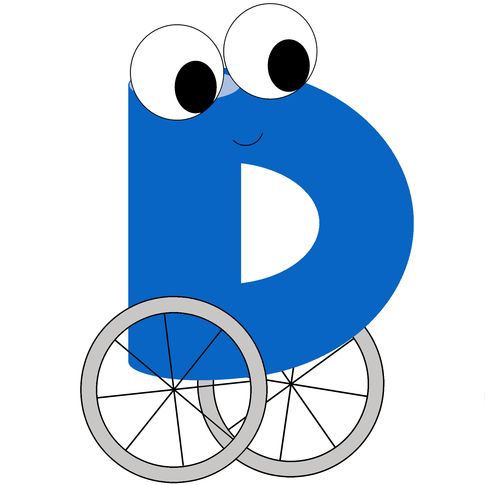
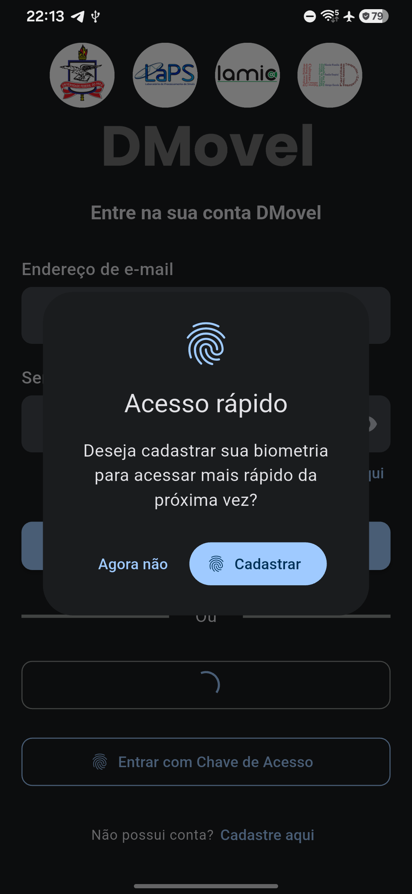
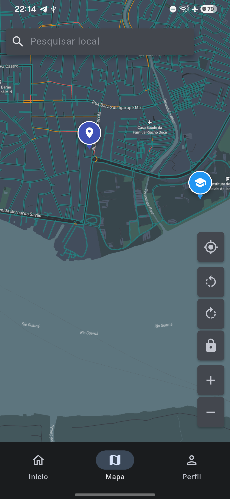
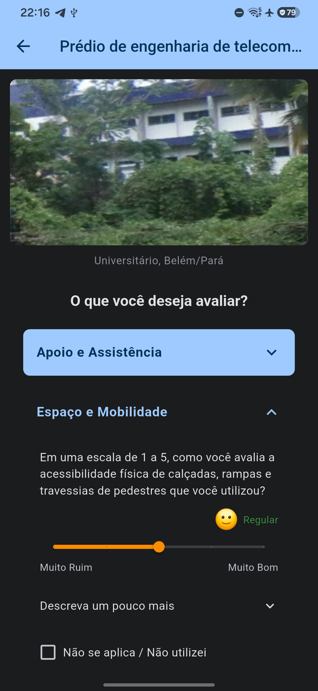
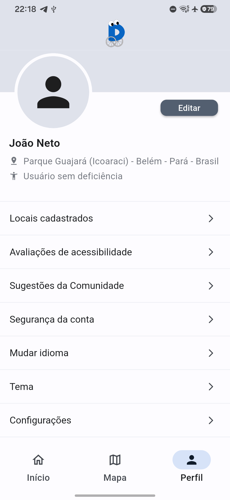

Acessibilidade Urbana Inteligente
Mapeando Cidades Acessíveis para Todos.
Uma plataforma distribuída, colaborativa e acessível que empodera pessoas com deficiência a explorar, avaliar e transformar a mobilidade urbana na Amazônia.
Discentes Pesquisadores
João da Cruz N. Neto
Daniel Moreira Barra
Engenharia • UFPA
Orientação Docente
Prof. Dr. Ronaldo de Freitas Zampolo
Laboratório de Processamento de Sinais (LaPS / ITEC)
Aponte a câmera do seu celular
lapshub.github.io/dmovel_web_app Web App 100% FuncionalA Barreira da Falta de Informação em Belém e na UFPA
A Barreira Invisível: Cidades Não Mapeadas para PCDs
Plataformas comerciais de mapas atendem automóveis e pedestres convencionais, mas negligenciam dados essenciais como largura de portas, desníveis de calçada e sinalização tátil.
Insegurança & Incerteza no Deslocamento
A falta de certeza sobre a acessibilidade do destino gera isolamento e impede o direito fundamental de ir e vir.
Desafio Crítico no Contexto Amazônico
Calçadas irregulares, chuvas equatoriais e ausência de dados públicos estruturados exigem inteligência colaborativa.
População Global
+1 Bilhão de pessoas com deficiência (OMS)
No Brasil
Demandam acessibilidade diária (IBGE)
A Resposta do LaPS / ITEC / UFPA
Construir uma cartografia viva, auditada e aberta, permitindo que a própria comunidade universitária e a sociedade mapeiem e avaliem a acessibilidade urbana.
Abordagem Integrada de Engenharia e Sociedade
Três Pilares de Transformação Urbana
Uma arquitetura orientada ao usuário para coleta, validação e disseminação de acessibilidade.
1. Cartografia Aberta
Cadastro rápido de Pontos de Interesse (POIs) com coordenadas GPS precisas, categorias temáticas (Saúde, Educação, Lazer) e upload de fotos comprobatórias.
2. Avaliação Multicritério
Avaliação decomposta em critérios objetivos: Apoio & Atendimento, Espaço Físico & Mobilidade e Acessibilidade da Informação, com sliders dinâmicos.
3. Inclusão & Tradução Neural
Suporte multilíngue em tempo real (Português, Inglês, Francês e Alemão) com pipeline de tradução neural automática para comentários e relatos.
Execução Real em Hardware Samsung Galaxy M34 5G (Android 16)
Design Focado em Reduzir Barreiras




Arquitetura Moderna Desenvolvida no LaPS / ITEC / UFPA
Stack Tecnológico Padrão AAA
Engenharia de alta velocidade, concorrência e resiliência a falhas.
Mobile & Web
Flutter 3.41 / Dart 3.11
60/120 FPS, Material 3, Biometria FIDO2/Passkeys e Temas Dinâmicos.
High-Speed Backend
Python 3.14 (No-GIL) + FastAPI
Execução free-threaded sem trava global do GIL, alta concorrência assíncrona.
Dados & Geo-Espacial
MongoDB & Redis
Índices geoespaciais 2dsphere para consultas por raio, Beanie ODM e cache.
Moderação & Mídia
Dash & Backblaze B2
Painel de auditoria de sugestões com visual diff e persistência segura em nuvem.
Pesquisa & Inovação no LaPS / ITEC / UFPA
Tecnologia a Serviço da Dignidade Humana
O DMovel une rigor científico, pesquisa em engenharia e impacto comunitário direto na cidade de Belém e na Universidade Federal do Pará.
IA Preditiva de Barreiras
Classificação automática de desníveis e calçadas via visão computacional em fotos.
Rotas Acessíveis no Campus
Navegação adaptada para estudantes e visitantes entre pavilhões da UFPA.
Parcerias Acadêmicas
Integração de dados com órgãos municipais e pesquisas de pós-graduação.
Código Aberto & Extensão
Projetos de extensão universitária envolvendo novos discentes do ITEC.
Acesse o DMovel Web no seu smartphone:
https://lapshub.github.io/dmovel_web_app/